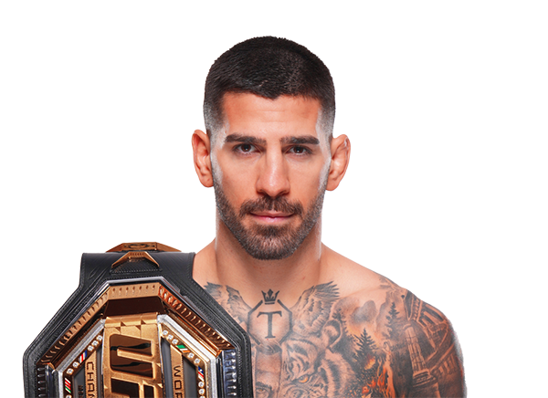

Ilia Topuria es un peleador profesional de artes marciales mixtas conocido por su estilo agresivo, su gran poder de nocaut y su excelente nivel técnico tanto en el striking como en el grappling. Nació el 21 de enero de 1997 en Halle, Alemania, en el seno de una familia de origen georgiano. Durante su infancia se trasladó junto con su familia a Georgia, donde comenzó a desarrollar interés por los deportes de combate. Años más tarde se mudó a España, país donde continuó su desarrollo como atleta y donde finalmente inició su carrera profesional en las artes marciales mixtas. Gracias a su dedicación, disciplina y talento natural para el combate, Topuria se convirtió en uno de los peleadores más prometedores de la nueva generación del MMA mundial. Desde sus primeras peleas profesionales destacó por su estilo dominante, combinando un striking explosivo con un grappling muy efectivo. Su capacidad para finalizar combates tanto por nocaut como por sumisión lo convirtió rápidamente en uno de los peleadores más peligrosos dentro de su división.

Ilia Topuria comenzó su carrera profesional en organizaciones europeas de MMA, donde rápidamente llamó la atención por su impresionante récord invicto y su capacidad para dominar a sus oponentes. Su estilo de pelea agresivo y su gran poder de finalización hicieron que muchos expertos lo consideraran uno de los prospectos más interesantes del deporte. Su talento finalmente lo llevó a firmar con la Ultimate Fighting Championship (UFC), la organización de artes marciales mixtas más importante del mundo. En la UFC, Topuria continuó demostrando su alto nivel competitivo enfrentándose a rivales de gran experiencia. Uno de los momentos más importantes de su carrera ocurrió cuando derrotó al legendario peleador australiano Alexander Volkanovski, logrando conquistar el campeonato de peso pluma de la UFC. Esa victoria consolidó su posición como uno de los mejores peleadores de su generación y como una de las figuras más destacadas del MMA moderno. Topuria también es conocido por su fuerte mentalidad competitiva, su confianza antes de las peleas y su enorme capacidad para mantener la calma bajo presión. Estas cualidades, combinadas con su gran talento técnico, lo han convertido en uno de los atletas más emocionantes de ver dentro del octágono.
Durante su carrera en las artes marciales mixtas ha competido principalmente en:
Ilia Topuria es reconocido por varias cualidades dentro del combate:
Gracias a su combinación de habilidades técnicas, potencia física y mentalidad ganadora, Ilia Topuria se ha convertido en una de las figuras más importantes del MMA actual. Muchos fanáticos y analistas consideran que su carrera apenas está comenzando y que todavía puede lograr grandes cosas dentro del deporte.
El estilo de pelea de Ilia Topuria es extremadamente completo. En el combate de pie destaca por su boxeo técnico, utilizando combinaciones rápidas, golpes precisos y un excelente control de distancia. Su capacidad para conectar golpes potentes en el momento adecuado lo convierte en un noqueador muy peligroso. En el suelo también es un peleador muy técnico, gracias a su entrenamiento en jiu-jitsu brasileño y lucha. Ha conseguido varias victorias por sumisión, lo que demuestra su capacidad para dominar tanto en el striking como en el grappling. Esta combinación de habilidades lo convierte en un peleador muy difícil de predecir y enfrentar dentro del octágono.
A pesar de su juventud, Ilia Topuria ya ha logrado consolidarse como uno de los peleadores más destacados del MMA moderno. Su estilo emocionante, su capacidad para finalizar combates y su fuerte personalidad lo han convertido en una figura muy popular entre los fanáticos del deporte. Si continúa evolucionando como atleta y manteniendo su alto nivel competitivo, muchos expertos creen que podría convertirse en uno de los campeones más dominantes de su generación y dejar una huella importante en la historia de las artes marciales mixtas.
Otros peleadores que podrían interesarte: